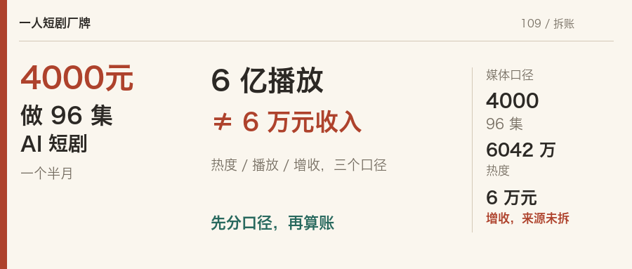

4000元做96集AI短剧，6亿播放不等于6万元收入
11月13日，成都40岁的白非空因为一部虫子短剧上了微博热搜。媒体给出的数字很抓人：4000多元成本、96集、一个半月、红果6042万热度、全网播放破6亿、增收6万元。
这几个数字放在一起，很容易得出一个结论：AI做短剧很便宜，一个人也能赚。这个结论跳过了三步：4000元买的是什么，6亿播放是什么，6万元又是什么。把三步补上，故事还是成立的，但公式不成立。
一、先把四个数字分开
媒体把几个数字并列，读者很容易把它们当成同一本账。先把口径拆开：
| 媒体说法 | 实际口径 | 不能拿来做什么 |
|---|---|---|
| 4000元制作 | AI平台会员、积分等算力与订阅支出，当事人自述 | 不能当全成本；不含人工、IP、设备、投流 |
| 6042万热度 | 红果平台的热度值 | 不是播放量，不是收入 |
| 6亿播放 | 媒体称全网播放；账号内播放5.6亿 | 不是收入，也不等于每集都有人看完 |
| 6万元增收 | 媒体口径，来源未拆 | 不是利润，不是可复制收入 |
热度是平台对剧集表现的加权分，播放是次数，收入是结算。三者不能互相换算。媒体把“6042万热度”和“6亿播放”并列，是在说传播，不是在说钱。
二、4000元买到的是算力，不是全成本
按当事人自述，4000多元全部投入AI创作平台的会员和积分；没有团队、没有投放推广、没有其他额外支出。96集、约一个半月完成。
把4000元摊到96集，每集约41.7元。这个数只覆盖算力和订阅，不是每集全成本。没有计入的东西至少还有四项：他辞职前十年的家居3D设计经验；一个半月每天约8小时的全职劳动；剧本/IP、设备和试错；以及第一部71集、播放89万的试错成本。
剧中“红缨”这个角色迭代了20多版，模型错位、动作僵硬也要反复重做。这些都在4000元之外。换句话说，4000元是第二部剧的算力钱，不是两次尝试的总成本，更不是“一个人做短剧”的全部投入。
三、6万元“增收”不是利润
媒体写的是“增收6万元”，没有说明这笔钱来自分账、广告、带货还是平台补贴，也没有给出结算周期。它可能是毛收入，也可能只是某个阶段的增量；在来源拆清之前，不能叫利润。
用6万除以4000，得到15倍。这个15倍是“毛收入／算力费”，不是“净利润／总成本”。如果把这6万全部算在一个半月里，月均毛收入约4万元；但人工、IP、设备和试错都没有进分母，第一部的89万播放也没有单独结算。把15倍当利润率，是把毛收入当成了净利。
更关键的是，6万元不是“做短剧”的稳定收入。它对应的是一部爆款、一个平台、一个特定时间窗口。换一个题材、换一个账号、换一个平台，这个数不能直接搬。
四、哪些能复制，哪些不能
能复制的是流程：一个人完成剧本、分镜、生成、配音、剪辑；把每天8小时当成上班；用AI做预演、角色一致性和批量生产；选一个钩子足够强的冷门IP；在有空场景的平台上做切片分发。
不能复制的是底子：十年3D设计积累的审美和分镜能力；第一部71集、89万播放之后还继续做的耐心；原著在番茄小说已有的读者，而且他不是第一个改编这个IP的人；以及平台推荐给不给量的运气。
所以4000元是成本下限，不是竞争壁垒。真正的门槛是：你能不能连续做出96集，并且在第一部没爆时还留在牌桌上。
五、一人公司先核三件事
第一，收入是什么钱：分账、广告还是带货？合同里的基数是流水、净收入还是有效播放？第二，成本有没有算全：算力、人工、IP/剧本、设备、投流，4000元只覆盖了第一项。第三，可复制性在哪里：题材、产能、审美、平台关系，哪一项是你的，哪一项只是平台的。
这三件事答不上来，“4000元做短剧”就只是一个成本故事，不是生意。
白非空做出了一部爆款，这是真的；“4000元换6万”不是公式。对一人公司，先别问AI便不便宜，先问自己能不能在没爆的时候，把第96集做完。
边界
- 4000多元制作成本、96集、约一个半月、每天约8小时、第一部71集89万播放、第二部账号内5.6亿播放、红果6042万热度、评分8.9、700多条剧评、增收6万元，均来自白非空接受媒体采访时的自述或媒体转述；未取得创作者后台、平台结算单或完税凭证。
- 4000多元仅为AI平台会员与积分等算力/订阅支出，不含人工、剧本/IP、设备、投流和试错成本；“每集41.7元”是本号按4000元除以96集算出的算力摊销，不是每集全成本。
- 6042万是红果热度值，5.6亿是账号内播放，6亿是媒体称全网播放；热度、播放、收入是三个口径，不能相加或互换。
- “6万元增收”只在媒体标题、导语和短视频文案中出现，正文未拆来源；不能当利润、净收入或可复制收入。“15倍”“月均4万元”均为本号按现有数字做的毛收入/算力费算术，不是投资回报率。
- 媒体多为一篇封面新闻采访的转引：21经济网与新浪财经为同一篇稿，17173、网易、星岛、大众日报、陕西都市快报、浙江经视等为同事件转写或短视频文案；按1个原始采访计，不记双源通过。封面新闻原文未直接取得。
- 本文不构成“做AI短剧能赚钱”的建议；平台规则、分账比例和推荐机制以各平台现行合同与后台为准。
来源
A 级（官方/原始数据）
- 本篇未取得平台结算单、官方公告或创作者后台；红果、即梦的官方规则与结算口径未逐条核读。
B 级（媒体采访/转述）
- 21经济网《40岁男子辞职后花4000元做AI短剧，拿下6000多万热度和6万元增收》（2026-11-16 22:51），http://www.21jingji.com/article/20261116/herald/fdf65ab86d3964380b4e440419edb757.html
- 新浪财经同题（2026-11-16 22:10，署21世纪经济报道），https://finance.sina.com.cn/wm/2026-11-16/doc-iniyxynv2263495.shtml
- 大众日报（新浪微博）《男子40岁辞职自学AI做短剧登顶热榜》（2026-11-13 20:23，提到“即梦短剧工作室”“增收6万元”），https://www.sina.cn/news/detail/5364888686038666.html
- 陕西都市快报（新浪微博）《40岁设计师辞职做AI漫剧爆火》（2026-11-14 10:41，提到“6000多万热度和6万元增收”），https://www.sina.cn/news/detail/5365104591770304.html
- 新浪新闻《40岁设计师辞职，4000元做96集AI短剧，播放破6亿》（2026-11-13 08:41，费县融媒），https://www.sina.cn/news/detail/5364712124453139.html
- 17173《40岁设计师辞职后用AI搓短剧4000成本收入6万元》（2026-11-16），http://news.17173.com/content/11162026/140146904.shtml
- 网易《〈重生螳螂〉爆火背后，AI短剧撕开新赛道》（2026-11-14），https://c.m.163.com/news/a/LBN82VOK0519FRSC.html
C 级（本号判断/算术）
- 四个数字的口径拆分，以及“热度≠播放≠收入≠利润”的判断。
- 4000元÷96集≈41.7元/集的算力摊销；6万元÷4000元=15倍的“毛收入/算力费”；按一个半月折算的月均约4万元毛收入。
- “可复制的是流程，不可复制的是十年设计经验、第一部失败后的耐心、原著读者和平台推荐运气”的归纳。
- 一人公司先核收入、成本、可复制性三项的核对顺序。
本文使用 AI 辅助写作，资料核对与算术由本地完成，结论经本人核对。